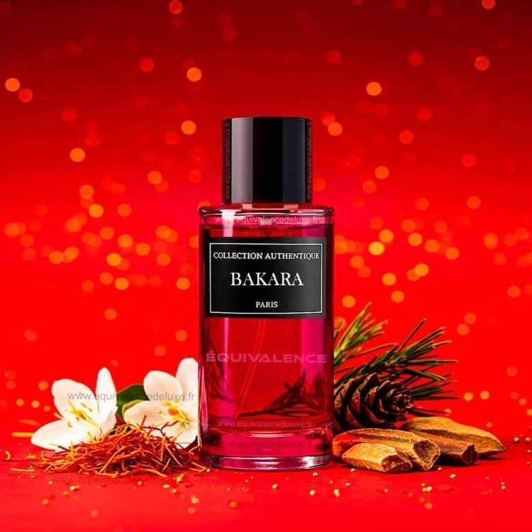
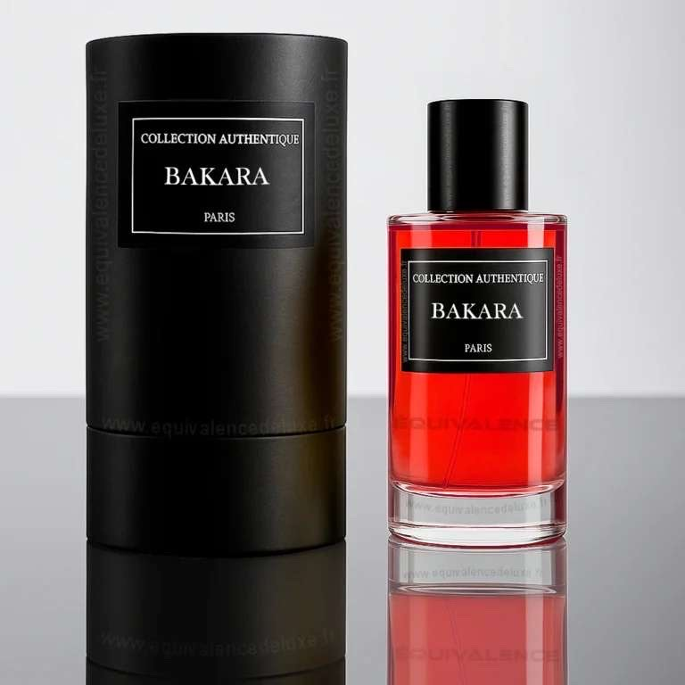

Description
Bakara est une fragrance puissante et captivante, inspirée des nuits élégantes parisiennes. Elle enveloppe la peau d’une aura mystérieuse et luxueuse.
Inspiration
Ce parfum rend hommage aux palais dorés, aux soirées feutrées et à la passion discrète. Une essence à la fois moderne et intemporelle.
Notes Olfactives
- Tête : Jasmin, Safran
- Cœur : Bois d’ambre
- Fond : Résine, Cèdre